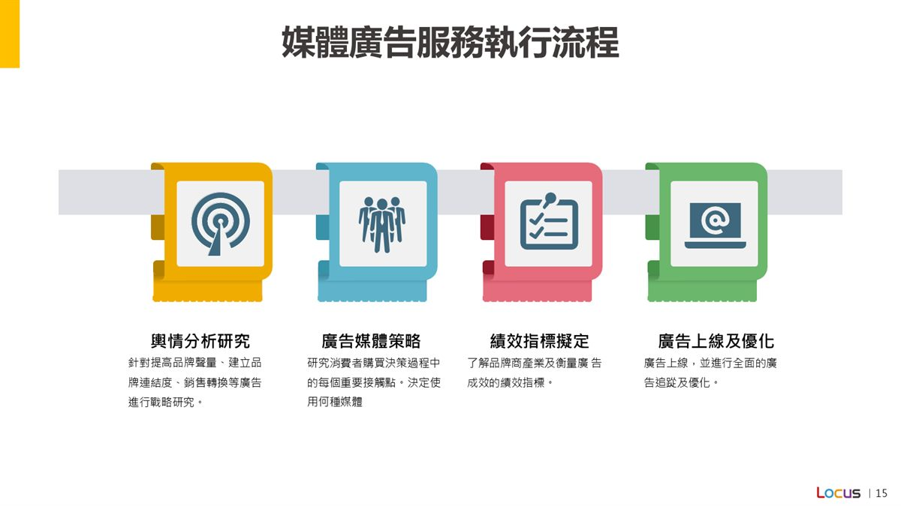
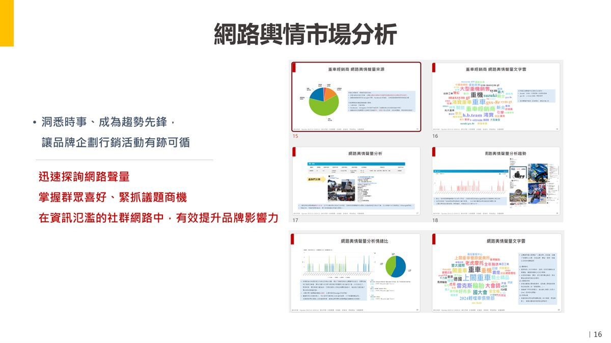
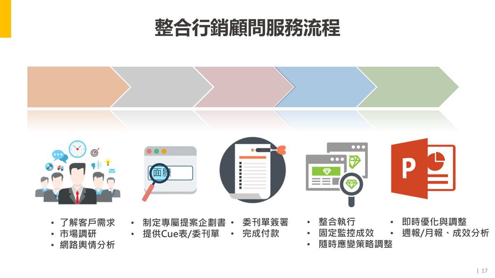
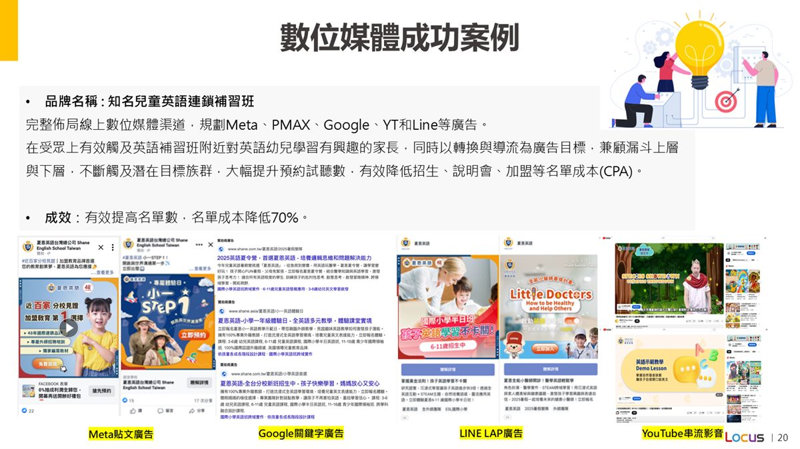
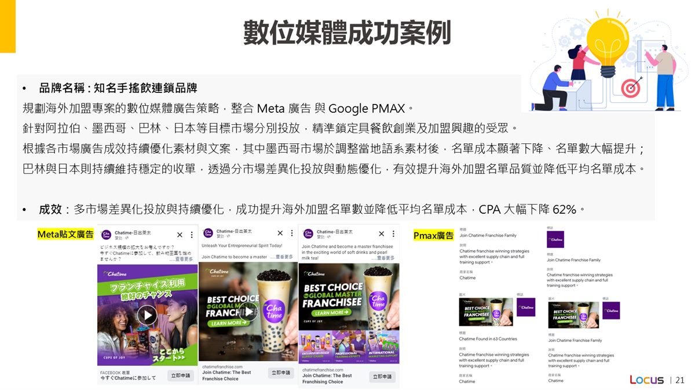

整合市場洞察、媒體投放、社群內容、影音素材與成效追蹤，讓行銷預算投入真正有效的位置。
掌握議題、競品、受眾與市場聲量，讓策略從洞察開始。
整合 Meta、Google、YouTube、LINE、場域推播等媒體工具，支援曝光、導流與轉換。
規劃廣告素材、短影音、社群內容與活動頁，讓每個接觸點訊息一致。
透過週報、月報、轉換分析與素材優化建議，持續提升行銷效率。
理解品牌目標、受眾輪廓、預算範圍與目前行銷挑戰。
結合市場調研、輿情觀察與數據洞察，找出策略方向。
制定媒體組合、內容節奏、KOL 合作與成效指標。
素材製作、廣告上線、內容發布與即時成效優化同步進行。
整理數據與洞察，轉化為下一波行銷行動建議。
將 PPT 中可公開作為第一版展示的流程圖與案例頁放入網頁，讓服務內容更具體。

從輿情分析、媒體策略、績效指標到上線優化，建立完整執行節奏。

洞悉時事與網路聲量，協助品牌掌握群眾喜好與議題商機。

從了解需求、市場調研、提案企劃到成效監控，串起完整專案管理。

透過多渠道投放與素材優化，提升預約試聽數並降低名單成本。

依不同市場差異化投放並持續優化素材，提升加盟名單品質。
讓新品透過內容、KOL、媒體與活動快速建立市場注意力。
用清楚的受眾策略與多媒體組合，降低名單成本並提升轉換品質。
整合線上聲量與線下情境，讓活動曝光更完整，也更容易導入人流。